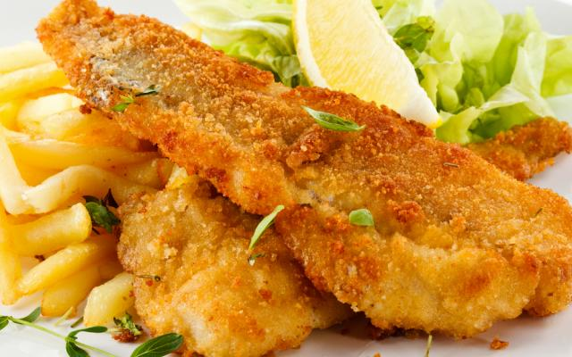

Filé de tilápia empanado
Peixe empanado e frito é uma das opções mais gostosas de consumir peixe. Esta receita de tilápia é bem simples de preparar e fica pronta em menos de 30 minutos.
Ingredientes
| Ingrediente | Porção |
|---|---|
| filé de tilápia | 1/2 kg |
| farinha de trigo | 1/2 xícara |
| farinha de rosca | 1/2 xícara |
| ovo | 1 unidade |
| mistura de ervas | 1 colher de chá |
| páprica doce ou colorau | 1 colher de chá |
| sal e pimenta do reino | a gosto |
| óleo de azeite para fritar | |
Modo de preparo
- Antes de fazer esta receita é necessário separar todos os ingredientes. Os filés de tilápia deverão estar descongelados ou em temperatura ambiente e cortados em pedaços
- Misture as ervas, a páprica e o alho na farinha de rosca. Esta é a farinha temperada caseira que iremos usar para empanar os filés
- Tempere a tilápia com sal e pimenta e envolva na farinha de trigo. Dê leves sacudidas, para eliminar o excesso de farinha, depois passe numa tigela com o ovo batido e deixe escorrer um pouco. Finalmente, envolva na farinha temperada do passo anterior.
- Coloque o óleo ou azeite para esquentar numa frigideira ou panela. Mergulhe um pouco de filé de tilápia empanado nele e, se começar borbulhando, significa que já esquentou o suficiente. Deixe por uns 3-4 minutos de cada lado e retire para um prato com papel absorvente.
- Repita a fritura com a restante tilápia, até fritar todos os pedacinhos. Sirva quente, como petisco ou prato principal. Bom apetite e diga nos comentários o que você achou!